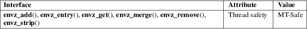

envz_add, envz_entry, envz_get, envz_merge, envz_remove, envz_strip − environment string support
Standard C library (libc, −lc)
#include <envz.h>
error_t
envz_add(char **restrict envz, size_t
*restrict envz_len,
const char *restrict name, const char
*restrict value);
char
*envz_entry(const char *restrict envz,
size_t envz_len,
const char *restrict name);
char
*envz_get(const char *restrict envz,
size_t envz_len,
const char *restrict name);
error_t
envz_merge(char **restrict envz, size_t
*restrict envz_len,
const char *restrict envz2, size_t
envz2_len,
int override);
void
envz_remove(char **restrict envz, size_t
*restrict envz_len,
const char *restrict name);
void envz_strip(char **restrict envz, size_t *restrict envz_len);
These functions are glibc-specific.
An argz vector is a pointer to a character buffer together with a length, see argz_add(3). An envz vector is a special argz vector, namely one where the strings have the form "name=value". Everything after the first '=' is considered to be the value. If there is no '=', the value is taken to be NULL. (While the value in case of a trailing '=' is the empty string "".)
These functions are for handling envz vectors.
envz_add() adds the string "name=value" (in case value is non-NULL) or "name" (in case value is NULL) to the envz vector (*envz, *envz_len) and updates *envz and *envz_len. If an entry with the same name existed, it is removed.
envz_entry() looks for name in the envz vector (envz, envz_len) and returns the entry if found, or NULL if not.
envz_get() looks for name in the envz vector (envz, envz_len) and returns the value if found, or NULL if not. (Note that the value can also be NULL, namely when there is an entry for name without '=' sign.)
envz_merge() adds each entry in envz2 to *envz, as if with envz_add(). If override is true, then values in envz2 will supersede those with the same name in *envz, otherwise not.
envz_remove() removes the entry for name from (*envz, *envz_len) if there was one.
envz_strip() removes all entries with value NULL.
All envz functions that do memory allocation have a return type of error_t (an integer type), and return 0 for success, and ENOMEM if an allocation error occurs.
For an explanation of the terms used in this section, see attributes(7).

GNU.
#include
<envz.h>
#include <stdio.h>
#include <stdlib.h>
int
main(int argc, char *argv[], char *envp[])
{
char *str;
size_t e_len = 0;
for (size_t i =
0; envp[i] != NULL; i++)
e_len += strlen(envp[i]) + 1;
str =
envz_entry(*envp, e_len, "HOME");
printf("%s\n", str);
str = envz_get(*envp, e_len, "HOME");
printf("%s\n", str);
exit(EXIT_SUCCESS);
}
argz_add(3)